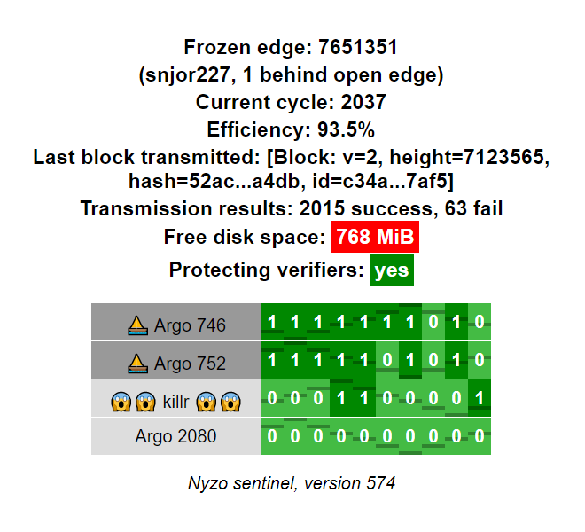

A sentinel will continue to operate properly and protect its verifiers even if it runs out of disk space. However, it will be unable to write new block files to disk. The next time the sentinel process initializes, it will not have recent blocks, and it will have to follow the blockchain for 4 cycles to begin protecting its managed verifiers again.
To ensure that sentinel disk-space issues do not go unnoticed, indication of available disk space could be added to the sentinel web interface. This would allow sentinel operators to easily track disk space across multiple sentinels without the need for separate monitoring tools.
NTTP-6: we propose adding disk-space monitoring to the sentinel web interface
Available disk space would be displayed above the Protecting verifiers line in the top section of the sentinel interface. Color-coding (green, yellow, red) would be according to user-adjustable thresholds.
This NTTP will be implemented without payment.